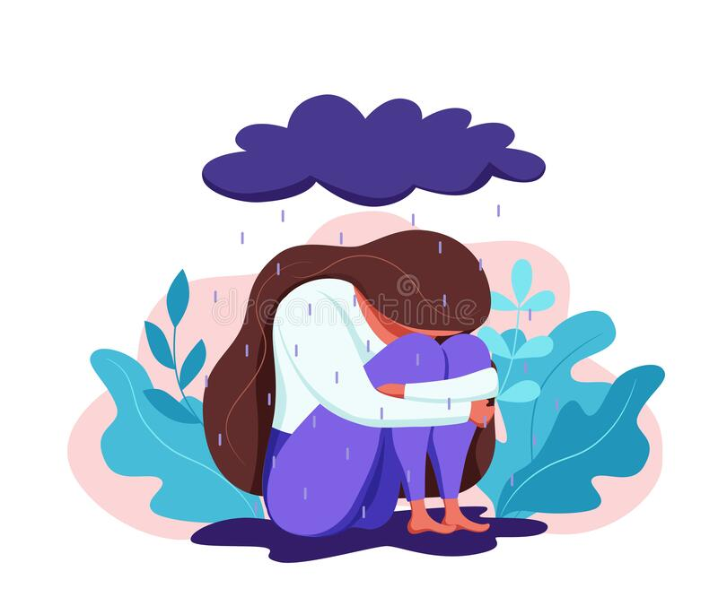

¿Qué es la depresion?
Todas las personas se sienten tristes o decaídas de vez en cuando, pero estos sentimientos suelen desaparecer en poco tiempo. La depresión, también llamada “depresión clínica” o “trastorno depresivo mayor” es diferente. La depresión puede causar síntomas graves que afectan cómo se siente, piensa y coordina actividades diarias como dormir, comer o trabajar. Es una enfermedad que puede afectar a cualquier persona, sin importar la edad, la raza, los ingresos, la cultura o el nivel educativo. Hay investigaciones que sugieren que los factores genéticos, biológicos, ambientales y psicológicos desempeñan una función en la depresión.
La depresión puede ocurrir conjuntamente con otros trastornos mentales y otras enfermedades como diabetes, cáncer, enfermedad cardíaca y dolor crónico. La depresión puede empeorar estos problemas de salud y viceversa. Algunas veces, los medicamentos que se toman para estas enfermedades ocasionan efectos secundarios que contribuyen a los síntomas de la depresión.
¿Cuáles son los diferentes tipos de depresión?
Dos de los tipos frecuentes de depresión son:
Otras formas de depresión incluyen las siguientes:
Las personas con un diagnóstico de trastorno bipolar (anteriormente llamado depresión maníaca o enfermedad maníaco depresiva) también sufren de depresión.
¿Cuáles son los signos y los síntomas de la depresión?
Entre los síntomas frecuentes de la depresión se incluyen los siguientes:
- sentimientos persistentes de tristeza, ansiedad o “vacío”;
- sentimientos de desesperanza o pesimismo;
- sentimientos de irritabilidad, frustración o intranquilidad;
- sentimientos de culpabilidad, inutilidad o impotencia;
- pérdida de interés o placer en las actividades y los pasatiempos;
- fatiga, disminución de energía o sensación de que está más lento;
- dificultad para concentrarse, recordar o tomar decisiones;
- dificultad para dormir, despertarse temprano en la mañana o dormir demasiado;
- cambios en el apetito o en el peso sin haberlos planificado;
- dolores y molestias, dolor de cabeza, calambres o problemas digestivos sin una causa física aparente, o que no se alivian ni con tratamiento;
- intentos de suicidio o pensamientos sobre la muerte o el suicidio.
¿Cómo se diagnostica la depresión?
Para diagnosticarle depresión a una persona, esta debe presentar cinco síntomas de la enfermedad todos los días, casi todo el día, por lo menos durante dos semanas. Uno de los síntomas debe ser un estado de ánimo depresivo o la pérdida de interés o placer en casi todas las actividades. Es posible que los niños y los adolescentes se muestren irritables en lugar de tristes.
Si cree que es posible que usted tenga depresión, hable con su proveedor de atención médica. Los médicos de atención primaria diagnostican y tratan de manera rutinaria la depresión y refieren a las personas a profesionales de salud mental, como psicólogos o psiquiatras.
Durante la consulta, su médico u otro proveedor de atención médica puede preguntarle cuándo empezaron sus síntomas, cuánto duran, con qué frecuencia ocurren y si no le permiten salir o hacer sus actividades habituales. Puede ser útil tomar notas sobre sus síntomas antes de la consulta. Algunos medicamentos y ciertas afecciones, como un virus o un trastorno de la tiroides, pueden ocasionar los mismos síntomas de la depresión. Su proveedor de atención médica puede descartar estas posibilidades al realizar un examen físico y una entrevista, y al ordenar pruebas de laboratorio.
Video gracias a: GENIAL en YouTube
Causas
Se desconoce la causa exacta de la depresión. Al igual que sucede con muchos trastornos mentales, puede comprender diversos factores, como:
Diferencias biológicas. Las personas con depresión tienen cambios físicos en el cerebro. La importancia de estos cambios aún es incierta, pero con el tiempo pueden ayudar a identificar las causas.
Química del cerebro. Los neurotransmisores son sustancias químicas que se encuentran naturalmente en el cerebro y que probablemente desempeñan un rol en la depresión. Las investigaciones recientes indican que los cambios en la función y el efecto de estos neurotransmisores, y cómo interactúan con los neurocircuitos involucrados en mantener la estabilidad del estado de ánimo pueden tener un rol importante en la depresión y su tratamiento.
Hormonas. Es posible que los cambios en el equilibrio hormonal del cuerpo tengan un rol al causar o desencadenar la depresión. Los cambios hormonales pueden presentarse en el embarazo y durante las semanas o meses después del parto (posparto), y por problemas de tiroides, menopausia u otros trastornos.
Rasgos hereditarios. La depresión es más frecuente en las personas cuyos parientes consanguíneos también tienen este trastorno. Los investigadores están buscando genes que puedan intervenir en el origen de la depresión.
¿Es igual la depresión en todas las personas?
La depresión puede afectar a las personas de diferentes maneras, según su edad.
Los niños con depresión pueden mostrarse ansiosos, malhumorados, fingir estar enfermos, negarse a ir a la escuela, aferrarse a sus padres o preocuparse de que uno de ellos fallezca.
Los niños más grandes y los adolescentes con depresión pueden tener problemas en la escuela o una baja autoestima o pueden estar callados, frustrarse fácilmente o sentirse intranquilos. También pueden tener síntomas de otros trastornos, como ansiedad y trastornos de la alimentación, déficit de atención con hiperactividad, o consumo de drogas. Los niños más grandes y adolescentes tienen una mayor probabilidad de sufrir de somnolencia excesiva (llamada hipersomnia) y un mayor apetito (llamado hiperfagia). En la adolescencia, las niñas comienzan a tener depresión con mayor frecuencia que los niños. Es posible que esto se deba a factores biológicos, hormonales y de ciclo vital que son únicos en las mujeres.
Los adultos jóvenes con depresión tienen una mayor probabilidad de estar irritables, quejarse de haber aumentado de peso y tener hipersomnia, así como tener una perspectiva negativa sobre la vida y el futuro. A menudo, estas personas tienen otros trastornos, como ansiedad generalizada, fobia social, trastorno de pánico y consumo de drogas.
Los adultos de mediana edad con depresión sufren más episodios depresivos, su libido se reduce, tienen insomnio a mitad de la noche o se despiertan en la madrugada. Es posible que también mencionen con mayor frecuencia que tienen síntomas gastrointestinales, como diarrea o estreñimiento.
A menudo, los adultos mayores con depresión sufren de tristeza o aflicción, o pueden tener síntomas menos evidentes. Pueden informar que sienten una carencia de emociones, en lugar de un estado de ánimo depresivo. Además, las personas mayores tienen una mayor probabilidad de presentar otras afecciones de salud o dolores que pueden causar o contribuir a la depresión. En casos graves, pueden ser notables los problemas de memoria y razonamiento (llamados pseudodemencia).
¿Cómo se trata la depresión?
Por lo general, el tratamiento de la depresión incluye medicamentos, psicoterapia o ambos. Si estos tratamientos no disminuyen los síntomas, otra opción de tratamiento puede ser la terapia de estimulación cerebral. En casos más leves de depresión, el tratamiento puede empezar solo con psicoterapia y se añaden medicamentos si la persona continúa teniendo síntomas. En el caso de una depresión moderada o grave, muchos profesionales de salud mental recomiendan una combinación de medicamentos y terapia al principio del tratamiento.
La selección del plan de tratamiento adecuado debe basarse en las necesidades y en la situación de salud de la persona y bajo el cuidado de un proveedor de atención médica. Puede ser necesario intentar diferentes cosas para poder encontrar el tratamiento que mejor funcione para usted.
Medicamentos
Los antidepresivos son medicamentos que se usan con frecuencia para tratar la depresión. Debe transcurrir cierto tiempo para que surtan efecto, por lo general, entre 4 y 8 semanas, y a menudo, los síntomas como problemas para dormir, apetito o concentración mejoran antes de que mejore el estado de ánimo. Es importante darles una oportunidad a los medicamentos antes de decidir si funcionan o no.
importante: Tenga presente que algunas personas, especialmente los niños, los adolescentes y los adultos jóvenes, pueden tener más pensamientos o conductas suicidas cuando toman antidepresivos, sobre todo durante las primeras semanas después de empezar a usarlos o cuando se cambian las dosis. Se debe vigilar de cerca a cualquier paciente que esté tomando antidepresivos, especialmente durante las primeras semanas del tratamiento.
Se dice que la depresión es resistente al tratamiento cuando una persona no mejora después de intentar con al menos dos antidepresivos. La esketamina es un medicamento más reciente aprobado por la FDA para la depresión resistente al tratamiento y se suministra como un aerosol nasal en un consultorio médico, una clínica o un hospital. A menudo, este medicamento es de acción rápida, por lo general en unas pocas horas, para aliviar los síntomas de la depresión. Por lo general, las personas continúan tomando un antidepresivo oral para mantener la mejoría lograda.
Otra opción para la depresión resistente al tratamiento es agregar un tipo diferente de medicamento que pueda hacer que el antidepresivo sea más eficaz, como un medicamento antipsicótico o anticonvulsivo, o bien, bupropión, un antidepresivo que funciona de forma diferente a la mayoría de los medicamentos.
Los medicamentos que le recete su proveedor de atención médica para la depresión pueden tener efectos secundarios, pero pueden disminuir con el tiempo. Hable con su médico sobre los efectos secundarios que tenga. No deje de tomar los medicamentos sin la ayuda de un proveedor de atención médica. Si deja de tomar su medicamento de forma abrupta, puede tener síntomas de abstinencia.
Psicoterapia
La psicoterapia (también llamada “terapia de diálogo” o “consejería”) enseña a las personas con depresión nuevas formas de pensar y comportarse, y también ayuda a cambiar hábitos que contribuyen a la depresión. En la mayoría de los casos, un profesional de salud mental debidamente autorizado y capacitado es el encargado de llevar a cabo las sesiones de psicoterapia, ya sean individuales o con otras personas en un entorno de grupo. Dos de las psicoterapias eficaces para tratar la depresión son la terapia cognitivo-conductual y la terapia interpersonal. El uso durante un tiempo limitado de formas más antiguas de psicoterapia, como la terapia dinámica, también puede ayudar a algunas personas con depresión.
Con la terapia cognitivo-conductual, las personas pueden aprender a desafiar y cambiar los patrones de pensamiento y de conducta que no son útiles, para así mejorar sus sentimientos de depresión y ansiedad. Entre los avances recientes de este tipo de terapia se incluyen la introducción de principios contemplativos y el desarrollo de formas especializada de terapias dirigidas a tratar síntomas específicos, como el insomnio.
La terapia interpersonal se centra en acontecimientos interpersonales y de la vida que generan algún impacto en el estado de ánimo y viceversa. La finalidad de esta terapia es ayudar a las personas a mejorar sus destrezas de comunicación en sus relaciones, establecer redes de apoyo y fijar expectativas realistas para ayudarles a sobrellevar crisis u otros problemas que pueden contribuir a la depresión o empeorarla.
¿Cómo me puedo cuidar a mí mismo?
Una vez que inicie el tratamiento, deberá a empezar a sentirse mejor poco a poco. No se presione mucho durante este tiempo. Trate de hacer las cosas que solía disfrutar. Aun si no se siente con ganas de hacerlas, pueden mejorar su estado de ánimo. Otras cosas que pueden ayudarlo son:
- Trate de hacer alguna actividad física. Tan solo 30 minutos de caminatas al día pueden mejorar su estado de ánimo.
- Trate de mantener una hora regular para acostarse y levantarse.
- Consuma alimentos saludables con regularidad.
- Haga lo que pueda y cómo pueda. Decida qué es lo que debe hacer y qué puede posponer.
- Trate de interactuar con otras personas y hablar con quienes confía sobre cómo se siente.
- Posponga decisiones importantes de la vida hasta que se sienta mejor.
¿Cómo puedo ayudar a un ser querido que está deprimido?
Si conoce a alguien con depresión, ayúdelo a que vea a un proveedor de atención médica o un profesional de salud mental. Usted también puede:
- Ofrecerle apoyo, comprensión y ánimo, y tenerle paciencia.
- Invitarlo a salir a caminar, pasear o participar en otras actividades.
- Ayudarlo a seguir el plan de tratamiento, como programar recordatorios para que se tome los medicamentos que le recetaron.
- Asegurarse de que tenga un medio de transporte para ir a sus citas de psicoterapia.
- Recordarle que la depresión desaparecerá con el tiempo y el tratamiento.
Importante:Tome en serio los comentarios sobre el suicidio y notifíquelos al proveedor de atención médica o terapeuta de su ser querido. Si está en peligro inmediato o está pensando en hacerse daño, llame a los servicios de emergencia al 911 o diríjase a la sala de emergencias del hospital más cercano.

Dinammicas para superar la depresion
Sal de la cama, a la hora de mejorar la depresión es de vital importancia permanecer activo, aunque en la depresión es difícil enfrentarse al día a día, el simple hecho de salir de la cama y afrontar las actividades cotidianas, hará que te sientas más capacitado, competente y mejorará tu estado de ánimo.
Realiza actividades que antes de tu depresión te satisfacían. Uno de los síntomas de la depresión es la anhedonía, es decir, la incapacidad para disfrutar plenamente de las actividades, lo que lleva a la persona a la inactividad y a retroalimentar la depresión, por tanto el hacer actividades agradables te ayudará a mejorar y a alcanzar cierta satisfacción y mejorará tu estado de ánimo. También puedes añadir nuevas tareas que podrías ejecutar en solitario o acompañado y que has ido dejando por falta de tiempo, pereza u otras causas.
Realiza ejercicio físico, no hace falta que hagas ejercicio físico como si fueras un deportista de élite, haz ejercicio conforme a tus posibilidades físicas (caminar, natación, gimnasia de mantenimiento, pilates, yoga...). cuando realizamos deporte segragamos endorfinas, sustancia que influye positivamente en el estado de ánimo, relaja favoreciendo el descanso nocturno y te sentirás más vital.
Rompe con la rutina. Si nuestra vida es rutinaria es posible que esto nos pueda llevar a perder la motivación a la hora de hacer las cosas, ya decíamos antes que realizar actividades es muy beneficioso para la depresión, también cambiar nuestra rutina habitual pude serlo. Intenta cambiar la manera en que haces tu trabajo, intenta conocer personas nuevas, cambia de trayecto a la hora de ir y volver a casa.
Realiza actividades en la naturaleza. Elige actividades que sean de tu gusto, caminar por la montaña, nadar en el mar, pasear por el bosque... Observar el paisaje, los animales, las flores, la puesta de sol, no solo conseguirá relajarte sino también que tomes conciencia de las cosas agradables que nos ofrece la vida.
Cuida tu aspecto físico: La valoración que tenemos de nuestra imagen es un pilar importante en nuestra autoestima. Sentirnos bien con nuestro aspecto nos mejora el estado de ánimo. Mantente aseado, viste ropa que te guste, cuida tu imagen, pero no te obsesiones con ello.
Cuida tu alimentación. Es importante que mantengas unos horarios estables de comida y que tengas una alimentación equilibrada. En la depresión muchas veces se pierde el apetito y no comer no te ayudará precisamente a sentirte bien. En otras ocasiones se presenta un aumento del apetito, lo que hace que la persona coma sin control, lo que lleva a una sensación de incapacidad para poder controlar los impulsos que tampoco ayuda a mejorar la depresión.
Mejora tu patrón de sueño. Es posible que si estás con depresión tu patrón de sueño se haya deteriorado y te cueste conciliar el sueño o te despiertes en medio de la noche. Para mejorar tu sueño, evita las cenas copiosas, ventila la habitación y mantén una temperatura confortable. Antes de acostarte puedes hacer ejercicios de relajación sencillo que te ayuden a conciliar el sueño.
Amplia tu círculo de amistades. Muchas personas con depresión se aislan de los demás o bien porque no les apetece interactuar con los demás o porque piensan que van a ser una “carga” para los otros. Nada más lejos de la realidad, la gente que nos quiere se preocupa por nosotros y harán lo que esté en su mano por ayudar. Intenta quedar con amigos incluso ampliar tu círculo de amistades, estar con otras personas te ayudará a vincularte con ellos y a disfrutar de su compañía.
Reserva tiempo para ti. En nuestra vida diaría apenas tenemos tiempo para hacer cosas para nosotros, nuestras responsabilidades y obligaciones consumen casi todo nuestro tiempo. Intenta sacar un rato para poder dedicarlo a ti cada día, ya sea para darte un baño relajante, leer algo que te guste, pasear, o cualquier otra cosa que te agrade.
Se tolerante contigo mismo. Tienes que tener en cuenta que el sentirte deprimido no es culpa tuya, por lo que no debes condenarte por ello. Centra tu atención en los logros que vas haciendo en el día a día y recompénsate por ello.
Analiza objetivamente los problemas. En la depresión muchas veces se pierde la perspectiva de las cosas y se tiende a ver todo mucho más negativo de lo que realmente es. Analiza los problemas de la manera más objetiva que puedas, si crees que has perdido la perspectiva consúltalo con laguien cercano que te pueda dar otro punto de vista. Si el problema que analizas no tiene solución, tendrás que aprender a vivir con ello y aceptarlo como una realidad dura que te toca vivir, si tiene solución, escribe todas las alternativas que tengas con las ventajas y desventajas de cada una de ellas, una vez hecho esto pon en marcha aquella que más beneficiosa sea.
Expresa tus emociones. Las emociones forman parte de nuestra naturaleza humana y nos ayudan a interpretar las situaciones. Sentir rabia, colera, tristeza, entusiasmo, impaciencia etc, es del todo normal y por tanto comunicarlas forma parte de la gestión de las mismas.
No te entregues a la autocompasion. Posiblemente estés en un momento en el que no dejas de darle vueltas a la cabeza preguntándote porque te pasa esto a ti. Con ello, lo único que consigues es retroalimentar tu derepsión generando más pensamientos negativos y predicciones pesimistas sobre el futuro, lo que hará que cada vez tengas menos percepción de control sobre la situación.
No consumas fármacos que el médico no te haya prescrito, la medicación es un recurso muy extendido para superar estados depresivos, ahora bien, como con cualquier tipo de fármacos estos se deben tomar bajo prescripción y seguimiento médico. Por lo que no es buena idea tomar medicación que alguien no experto te asegure que va bien.